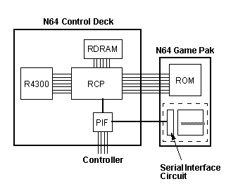

|
|
EEPROM
What is the EEPROM?
Figure 26.6.1 Hardware Configuration
EEPROM Capacity
One is the 4k-EEPROM. The capacity of this type is 4 kilobits (64 words ( 64 bits = 512 bytes). The other is the 16k-EEPROM. The capacity of this type is 16 kilobits (256 words ( 64 bits = 2048 bytes).
Until now, only the 4k-EEPROM has been available. Because of this the EEPROM functions in Nintendo 64 OS/Library version 2.0H and earlier are not compatible with the 16k-EEPROM. Use Nintendo 64 OS/Library version 2.0I and later when creating applications which use the 16k-EEPROM. A 16k-EEPROM patch is necessary when using the 16k-EEPROM with version 2.0H and earlier.
Data Reliability
In addition, it is possible to store data for 10 years. However, beyond that period, unless they are rewritten, there are cases in which the memory cell's charge gradually is lost, and the data cannot be properly read.
As a countermeasure to this potential problem, it is recommended that the reliability of the data be preserved with additional data, such as check sum or parity bits.
Precautions When Writing Data
When performing consecutive writes, allow 15 milliseconds or more between write commands.
The osEepromLongWrite() function solves this problem and performs continuous writing. osEepromLongWrite() uses the CPU timer to count 15 milliseconds after writing every 8 bytes of data. The timer interrupt is set to occur after 15 milliseconds, and the thread that called this function waits until the interrupt occurs
EEPROM Function Specifications
Syntax
An EEPROM may be built into the N64 Game Pak and used to save data during a game. A circuit is added to the EEPROM so that it can communicate with the serial interface of the RCP.

There are two types of EEPROM according to their capacities.
The EEPROMs currently used are capable of 100,000 write cycles. This means that data can be properly written to the various addresses (0~63 for a 4k-EEPROM, 0~255 for a 16k-EEPROM) up to 100,000 times each, but beyond that the memory cells deteriorate and the possibility arises that the data will not be written accurately.
When performing a write (when osEepromWrite is called), once the write command has been received by the EEPROM interface circuit, it takes approximately 15 milliseconds for the data to actually be written to the memory cell. If the next osEepromWrite is called during this time, wasted read status polling loops will be repeated inside the function until the data write from the previous command is completed.
Following are descriptions of the library functions used to handle the EEPROM. These functions include:
Checks whether or not an EEPROM is built into the N64 Game Pak.
Writes 8 bytes of data to an address in the EEPROM.
Reads 8 bytes of data from an address in the EEPROM.
Writes 8 length contiguous bytes of data to an address in the EEPROM.
Reads 8 length contiguous bytes of data from an address in the EEPROM.
#include <ultra64.h>
s32 osEepromProbe(OSMesgQueue *mq);
Description
This function checks to see if EEPROM is correctly loaded in an N64 Game Pak. If EEPROM is correctly loaded, this function returns the type of EEPROM. The return values are:
"mq" is the initialized message queue associated with OS_EVENT_SI events. For details, see the osSetEventMesg()function in the N64 Online Function Reference Manual. Since "mq" is used inside the function to wait for messages, the application does not need to use "mq" to wait for an end-of-function message.
Note: You must always call osContInit() to initialize low-level synchronization before you call osEepromProbe.
Whenever an application uses EEPROM, you must use osEepromProbe to ensure that EEPROM is correctly loaded.
If you find that EEPROM is not correctly loaded, Nintendo recommends that the game be terminated for safety reasons.
Function - osEepromRead, osEepromWrite
Syntax
#include <ultra64.h> s32 osEepromRead(OSMesgQueue *mq, u8 address, u8 *buffer); s32 osEepromWrite(OSMesgQueue *mq, u8 address, u8 *buffer);
Description
This function reads 8 bytes of data from an address in the EEPROM (0~63 for a 4k-EEPROM, 0~255 for a 16k-EEPROM). A 0 [zero] is returned if the data are properly read (when no error occurs in the communications path). A -1 is returned if the address is a value which is not within the proper range. An 8 (CONT_NO_RESPONSE_ERROR) is returned when there is no EEPROM, or when the interface circuit does not respond.
The osEepromWrite function writes 8 bytes of data to an address in the EEPROM (0~63 for a 4k-EEPROM, 0~255 for a 16k-EEPROM). A 0 [zero] is returned if the write command is properly sent to the interface circuit. A -1 is returned if the address is a value which is not within the proper range. An 8 (CONT_NO_RESPONSE_ERROR) is returned when there is no EEPROM installed in the Game Pak, or when the interface circuit does not respond due to a communications problem.
The returned value is 0 if the command is properly sent to the interface circuit. The returned value is -1 if the value of "address" is not within the proper range. If no EEPROM exists or if the interface circuit does not respond, then the returned value is 8 (CONT_NO_RESPONSE_ERROR).
"mq" is the initialized message queue associated with OS_EVENT_SI events. For details, see the see the osSetEventMesg() function in the N64 Online Function Reference Manual. Since "mq" is used inside the function to wait for messages, the application does not need to use "mq" to wait for an end-of-function message.
The osEepromRead and osEepromWrite functions can only read and write data of 8 bytes (1 block). To read and write more than 8 bytes, use the osEepromLongRead and osEepromLongWrite functions.
The EEPROM command takes about 15 milliseconds to finish. To avoid a reduction in overall system performance, you need to set up a timer between calls to osEepromRead and osEepromWrite.
Function - osEepromLongRead, osEepromLongWrite
Syntax
#include <ultra64.h> s32 osEepromLongRead(OSMesgQueue *mq, u8 address, u8 *buffer, int nbytes); s32 osEepromLongWrite(OSMesgQueue *mq, u8 address, u8 *buffer, int nbytes);
Description
This function reads 8 length contiguous bytes of data from an address in the EEPROM (0~63 for a 4k-EEPROM, 0~255 for a 16k-EEPROM). Actually, inside the function, this simply calls osEepromRead length times.
The size of "buffer," which is the buffer used for storing the data, must be large enough to hold "nbytes" of data. Also, due to a hardware restrictions, the transfer byte size (nbytes) must be a multiple of 8. Note that "address" is an EEPROM block address. Because blocks are in units of 8 bytes, you must specify a value that is divisible by 8 for the actual address.
"mq" is the initialized message queue associated with OS_EVENT_SI events. For details, see the osSetEventMesg() function in the N64 Online Function Reference Manual. Since "mq" is used inside the function to wait for messages, the application does not need to use "mq" to wait for an end-of-function message.
It can take as long as 15 milliseconds for the EEPROM write command to complete a data transfer. The osEepromWrite() function is called numerous times inside the osEepromLongWrite() function, and the CPU timer is used to wait 15 milliseconds every time data is written with osEepromWrite(). The returned values are the same as for osEepromWrite(). That is to say, the returned value is 0 if all write commands (the amount for "length" (=nbytes/8) number of times) have been properly sent to the interface circuit. The returned value is -1 if the value of "address" is not within the proper range. The returned value is 8 (CONT_NO_RESPONSE_ERROR) if no EEPROM exists or if the interface circuit does not respond.
The osEepromLongRead() function internally calls osEepromRead() the "length" number of times. The returned values are the same as for the osEepromRead() function. A 0 is returned if all data (the amount for "length" number of times) is properly read. A -1 is returned if the value of "address" is not within the proper range. An 8 is returned (CONT_NO_RESPONSE_ERROR) if no EEPROM exists or if the interface circuit does not respond.
Using the EEPROM Functions
Following is a sample program which illustrates proper usage of the EEPROM functions.
#include <ultra64.h>
OSMesgQueue siMesgQueue; /* SI message queue */
OSMesg siMesgBuf[1]; /* SI message buffer */
static OSContStatus sdata[MAXCONTROLLERS]; /* Controller Port status */
u8 save_buffer[EEPROM_MAXBLOCKS * EEPROM_BLOCK_SIZE];
/* Buffer for writing 512 bytes of data */
u8 load_buffer[EEPROM_MAXBLOCKS * EEPROM_BLOCK_SIZE];
/* Buffer for reading 512 bytes of data */
int save_eeprom(OSMesgQueue *mq, u8 *buffer)
/* Function for writing data to all 512 bytes of 4k EEPROM */
{
int I,ret = 0;
if( osEepromProbe(mq) != 1 )
/* Check whether communications with EEPROM are possible */
return -1;
for(I = 0; I < EEPROM_MAXBLOCKS ; I++) {
ret |= osEepromWrite(mq, I, buffer);
/* Write data to EEPROM */
WAIT_15_M_SEC();
/* Wait 15msec */
}
return ret;
}
int load_eeprom(OSMesgQueue *mq, u8 *buffer)
/* Function for reading all 512 bytes from EEPROM */
{
int I,ret = 0;
if( osEepromProbe(mq) != 1 )
/* Check whether communications with 4k EEPROM are possible */
return -1;
for(I = 0; I < EEPROM_MAXBLOCKS ; I++)
ret |= osEepromRead(mq, I, buffer);
/* Read the data in EEPROM */
return ret;
}
void main_proc(void)
{
static OSContPad rdata[MAXCONTROLLERS];
/* Controller data */
int ret = 0;
u8 p;
int I;
osCreateMesgQueue(&siMesgQueue, siMesgBuf, 1);
/* Allocate siMesgBuf as si message queue area */
osSetEventMesg(OS_EVENT_SI, &siMesgQueue, NULL);
/* Set message in si message queue when an SI interrupt occurs */
osContInit(&siMesgQueue, &p, &sdata[0]);
/* Check Controller connection status */
while(1){
if(p) {
/* Controller exists*/
osContStartReadData(&siMesgQueue);
/* Start reading data read */
osRecvMesg(&siMesgQueue, NULL, OS_MESG_BLOCK);
/* Wait for message from si */
if(p & 0x1) {
/* Controller No.0 exists */
osContGetReadData(&rdata[0]);
/* Copy data received from Controller to rdata */
if( rdata[0].button & CONT_A ) {
/* Controller No.0 A button has been pressed */
ret = save_eeprom(&siMesgQueue, save_buffer);
/* Save save_buffer data to EEPROM */
if( ret )
ERROR_PROC_1(); /* Error process */
}
if( rdata[0].button & CONT_B ) {
/* Controller No.0 B button has been pressed. */
ret = load_eeprom(&siMesgQueue, load_buffer);
/* Load data from EEPROM to load_buffer. */
if( ret )
ERROR_PROC_2(); /* Error process */
}
} /* if(p & 0x1) */
} /* if(p) */
} /* while(1) */
}
|
Copyright © 1999 Nintendo of America Inc. All Rights Reserved Nintendo and N64 are registered trademarks of Nintendo Last Updated January, 1999 |